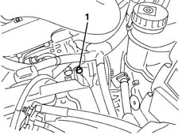
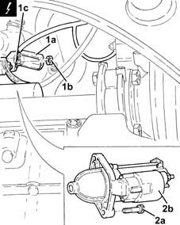
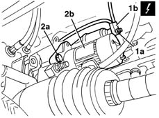
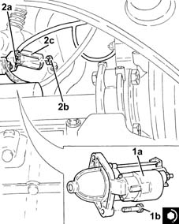
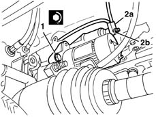
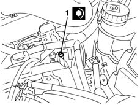

5520B10 starter motor - r+r
- Path
- Procedures > 55 ELECTRICAL EQUIPMENT > 5520 ENGINE STARTING > 5520B starter motor and components > 5520B10 starter motor - r+r
- Kind
- repair procedure (removal / refitting; the operation number is the code)
- Applies to
- all engines; all production periods
- Interactive page
- https://sloeber94.github.io/elrnDB-lYpsln/en/#/2429390
Applies to: engines: 1.2 8v, 1.2 16v, 1.4 16v; all production periods
 Removing
Removing
 Refitting
RefittingPlace the vehicle on a lift.
1. Working through the battery compartment, undo the top starter motor bolt.

Applies to: engines: 1.3 JTD; all production periods
Removing
RefittingPosition the vehicle on the ramp.
Ensure that the ignition key is in the OFF position, then disconnect the negative battery terminal (-).
 | Name | Connector |
|---|---|---|
- | Battery |
1. Open the cover (1a), undo the nuts (1b) and disconnect the electrical connections (1c) for the alternator.
| Name | Connector |
|---|---|---|
1c | Starter' motor |
2. Undo the bolts (2a) and remove the starter motor (2b).

Applies to: engines: 1.2 8v, 1.2 16v, 1.4 16v; all production periods
Raise the car.
1. Undo the nuts (1a) and disconnect the electrical connections (1b) from the starter motor.
| Name | Connector |
|---|---|---|
1b | Starter' motor |
| Name | Connector |
|---|---|---|
1b | Starter' motor |
2. Undo the lower fixing bolt (2a) and remove the starter motor (2b).

Applies to: engines: 1.3 JTD; all production periods
Refitting
Removing1. Place the starter motor (1a) back in its housing and fix it tightening the bolts (1b) to the recommended torque.
 | Fastening | Component | Ø | Value (daNm) |
|---|---|---|---|---|
1b | - | STARTER MOTOR | M8 | (Engine crankcase side) 2.3 ÷ 2.8 |
2. Connect the electrical connections (3a) to the starter motor, fix them using the nut (2b) and close protective cover (2c).

Applies to: engines: 1.2 8v, 1.2 16v, 1.4 16v; all production periods
Refitting
RemovingCheck that the starter motor is not damaged.
1. Replace the starter motor in its housing and fix it tightening the lower bolts to the recommended torque.
| Fastening | Component | Ø | Value (daNm) |
|---|---|---|---|---|
- | Bolt | STARTER MOTOR | M8 | 2.4 ÷ 3.0 |
2. Connect electrical connections (2a) and tighten nuts (2b).

Applies to: engines: 1.3 JTD; all production periods
Connect the negative (-) battery terminal.
Remove the vehicle from the ramp.
Applies to: engines: 1.2 8v, 1.2 16v, 1.4 16v; all production periods
1. Tighten the upper motor bolt to the specified torque.
| Fastening | Component | Ø | Value (daNm) |
|---|---|---|---|---|
- | Bolt | STARTER MOTOR | M8 | 2.4 ÷ 3.0 |

Applies to: engines: 1.2 8v, 1.2 16v, 1.4 16v; all production periods
Remove the vehicle from the lift.